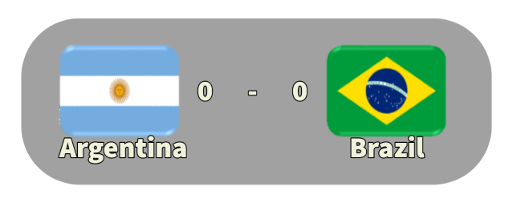
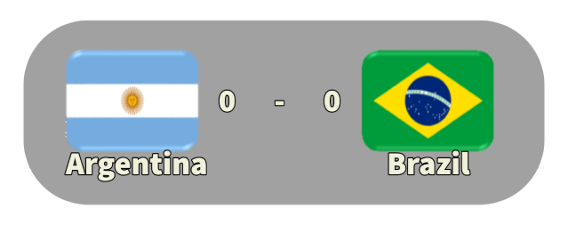

REGLAMENTO
Los 16 equipos que participan en la fase final se dividen en cuatro grupos de cuatro equipos cada uno. Dentro de cada grupo se enfrentan una vez entre sí, por el sistema de todos contra todos. Según el resultado de cada partido se otorgan dos puntos al ganador, un punto a cada equipo en caso de empate, y ninguno al perdedor. Pasan a la siguiente ronda los dos equipos de cada grupo mejor clasificados. La segunda ronda se comprende de otra fase de grupos, compuesta por dos grupos de cuatro equipos cada uno. El sistema es el mismo que el de la fase anterior, pero el primero de cada grupo clasifica a la final, mientras que los segundos juegan por el tercer puesto. El ganador de la final obtiene la Copa Mundial.
TRAYECTORIA
PRIMERA FASE
SEGUNDA FASE
 


GRAN FINAL
EQUIPO TITULAR
- Oscar Ortiz
- Leopoldo Luque
- Daniel Bertoni
- Mario Kempes
- Américo Gallego
- Osvaldo Ardiles
- Alberto Tarantini
- Daniel Passarella (C)
- Rubén Galván
- Jorgue Olguín
- Ubaldo Fillol

DIRECTOR TECNICO
César Luis Menotti (Rosario, 22 de octubre de 1938) es un exfutbolista y exentrenador de fútbol argentino. Jugaba como volante y su primer equipo fue Rosario Central. Como director técnico, condujo a Huracán a la obtención del campeonato de Primera División (Torneo Metropolitano 1973). Gracias a este logro, fue designado como entrenador de la selección de fútbol de Argentina, con la cual ganó la Copa del Mundo de 1978. Sus métodos tácticos y estilo de juego son conocidos como menottismo. Es el actual director de Selecciones de la Asociación del Fútbol Argentino. Además, es director ejecutivo de la Escuela de Entrenadores César Luis Menotti.
BOTA DE ORO
Mario Alberto Kempes Chiodi (Bell Ville, 15 de julio de 1954) es un exfutbolista, exentrenador y actual comentarista argentino. Jugaba de delantero, siendo apodado el «Matador» por la facilidad que tenía para el gol. Es considerado uno de los mejores jugadores argentinos de la historia. Fue el conductor de la selección argentina que ganó la Copa Mundial de la FIFA Argentina 1978, siendo el máximo goleador y mejor jugador del campeonato. Ese mismo año sería considerado como el mejor jugador del mundo al ser simultáneamente premiado como el mejor futbolista sudamericano del mundo por el diario El Mundo y como el mejor jugador de Europa al recibir el Once de Oro. Kempes es considerado, junto con Alfredo Di Stéfano, Diego Armando Maradona y Lionel Messi, como uno de los grandes jugadores de la historia nacidos en Argentina y entró dentro del Hall of Fame del Valencia CF, siendo elegido por la IFFHS como el 6to mejor jugador argentino del siglo xx. Actualmente trabaja como comentarista deportivo para la cadena ESPN.
Máximo goleador del torneo: 6 goles.